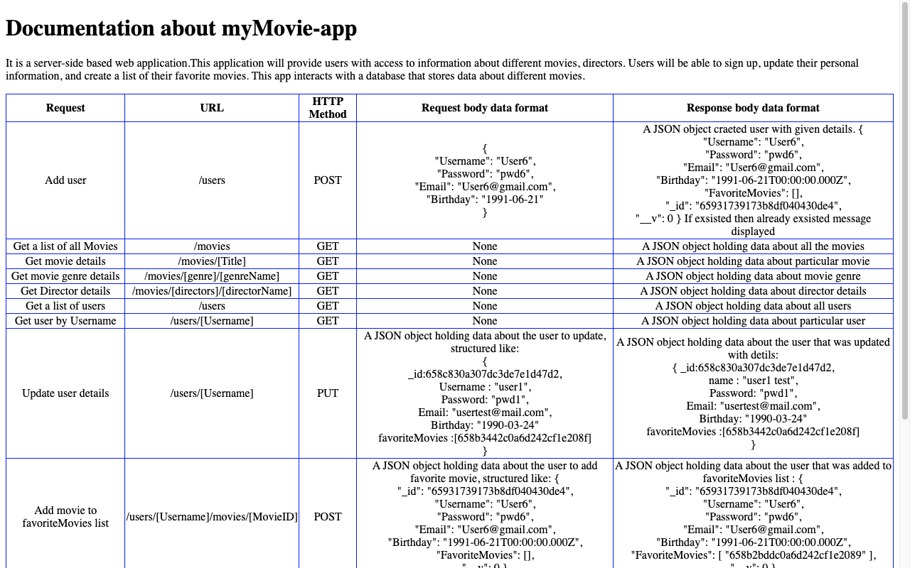

myMovie-app
Project Description
myMovie-app is a server-side web application.This application allows to signup the users. Logon to the
app and update their personal
information. Logged in users can access all the movies information, directors and geners. They can search
movies with name and filter
movies by genre name, create a list of their favorite movies and can access them in their profile.The app
interacts with a database(MongoDB)
that stores data about different movies and user information.
During the development of the application, I enhanced my skills in JavaScript and database queries. I
utilized Postman to test the endpoints
and documented the application using JSDoc comments.
Technologies Used
Backend: Node.js, Express.
Authentication: JWT (JSON Web Tokens).
Database: MongoDB Atlas.
Features of the Application
- RESTful Architecture
- Middleware Integration
- body-parser for reading data from requests
- morgan for logging
- Package Management with package.json
- Database built using MongoDB
- Business Logic modeled with Mongoose
- Data provided in JSON format
- Error-Free JavaScript Code
- Endpoint Testing with Postman
- User Authentication and Authorization
- Data Validation Logic
- Data Security Regulations Compliance
- Public Deployment of Source Code